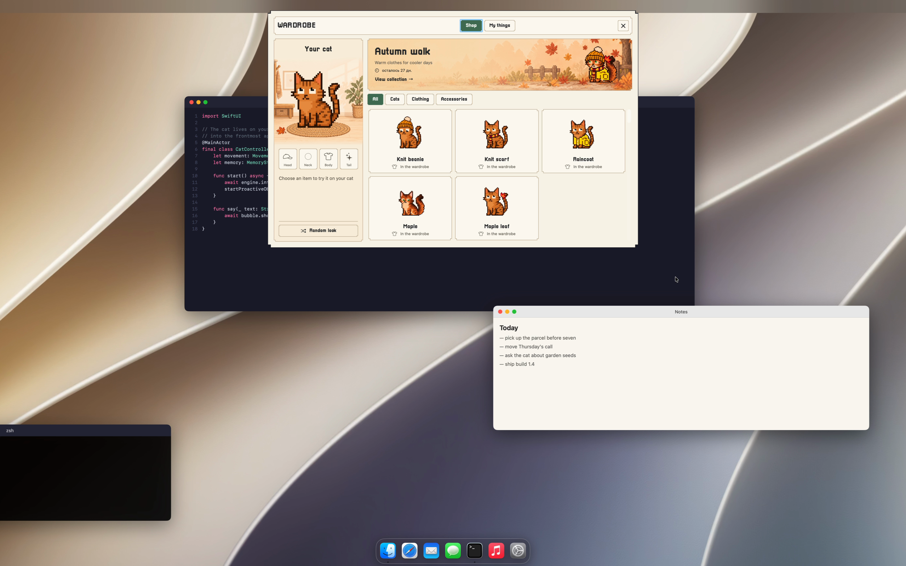

{kind=link}
{kind=link}
{kind=link}
{kind=link}
{kind=link}
{kind=link}
{kind=link}
{kind=link}
{kind=link}
{kind=link}
{kind=link}
{kind=link}
{kind=link}
{kind=link}
AppleInsider
A Russian-language feature on putting an AI cat on a Mac desktop.
Everything you need to write about Mewmori: copy in three lengths, logos, the icon, screenshots, GIFs and verified numbers. Grab the whole archive or just the parts you need.
One archive: logos, icon, screenshots, GIFs and the copy in both languages. · 23.0 MB
Take any of it as is and edit freely — no approval needed.
Mewmori is a pixel cat that lives on your Mac desktop, gets to know you and remembers your conversations — the language model runs on the machine itself, while replies, screen contents and memories stay on your Mac.
Mewmori is a desktop pet for macOS that behaves like a cat and remembers like a friend. It asks your name, takes the one you give it, notices what you are working on, and brings it up a week later. A 1.4 GB model runs locally: replies, screen contents and memories stay on your Mac.
Mewmori is a pixel cat that lives on your Mac desktop and gets to know you. A five-act introduction has it ask your name, receive one from you, and ask what you do — and from then on it remembers. Not a chat history, but facts: what you work on, what you like, what kept you busy.
It all runs on Qwen 3.5 (2B), a language model that works on the computer itself. The model weighs 1.4 GB and downloads only when you first want to talk; decline, and the cat still lives. Replies, screen contents and memories are not sent from your Mac, and there is no sign-up.
The cat also lives its own life: it notices what is on your screen, begs for food, gets the zoomies, plays hide-and-seek and tic-tac-toe, grows herbs and goes on expeditions. The app is free; only skins and accessories are paid.





| What it is | A macOS desktop pet with a local language model and long-term memory |
| Version | 1.0.25 |
| System | macOS 14.6 or newer |
| Processor | Universal binary: Apple Silicon and Intel |
| Size | 26 MB download, about 50 MB on disk |
| Model | Qwen 3.5 (2B), 1.4 GB — downloaded separately and only with consent; the cat works without it |
| Memory | 4 GB RAM or more for conversations |
| Memory in use | About 400 MB with the model loaded — preliminary measurement on a MacBook Pro M3 Max |
| Privacy | Replies, screen contents and memories never leave the computer |
| Account | None. No sign-up; a purchase lives in a licence key |
| Price | The app is free. Only skins and accessories are paid, 99–1990 ₽ (90–1780 ⭐ in Telegram Stars), one-time |
| Contents | 15 cats, 22 wardrobe items, 5 things to do: hide-and-seek, chase, clicker, tic-tac-toe, a garden with expeditions |
| Languages | Russian and English, following the system language |
| Updates | Sparkle, in-app |
| Developer | Maxim Grishutin, a one-person project |
The name reads two ways: mew + memory — a cat that remembers you — and memento mori. The second reading is deliberate.
Coverage and mentions published outside Mewmori's own channels.
A Russian-language feature on putting an AI cat on a Mac desktop.
Mewmori appears at 24:43 in “Neurofly vs. Neurocat”; the episode notes link to the site.
“I didn't need another chatbot in a window. I wanted a creature that simply lives nearby and one day recalls something you said last week.”
Maxim Grishutin — on why it had to be a cat
“The local model isn't a privacy checkbox here. The cat sees your screen — if that went to a server, I wouldn't install it myself.”
Maxim Grishutin — on why the model runs locally
The logo, icon, screenshots and GIFs may be used freely in coverage of Mewmori — articles, reviews, videos and roundups. No permission needed. One request: don't redraw the logo and don't pass the materials off as something else.
Email me — I answer personally and quickly. If you need additional screenshots, access to the paid skins for a review, or an answer that isn't on this page, just ask.